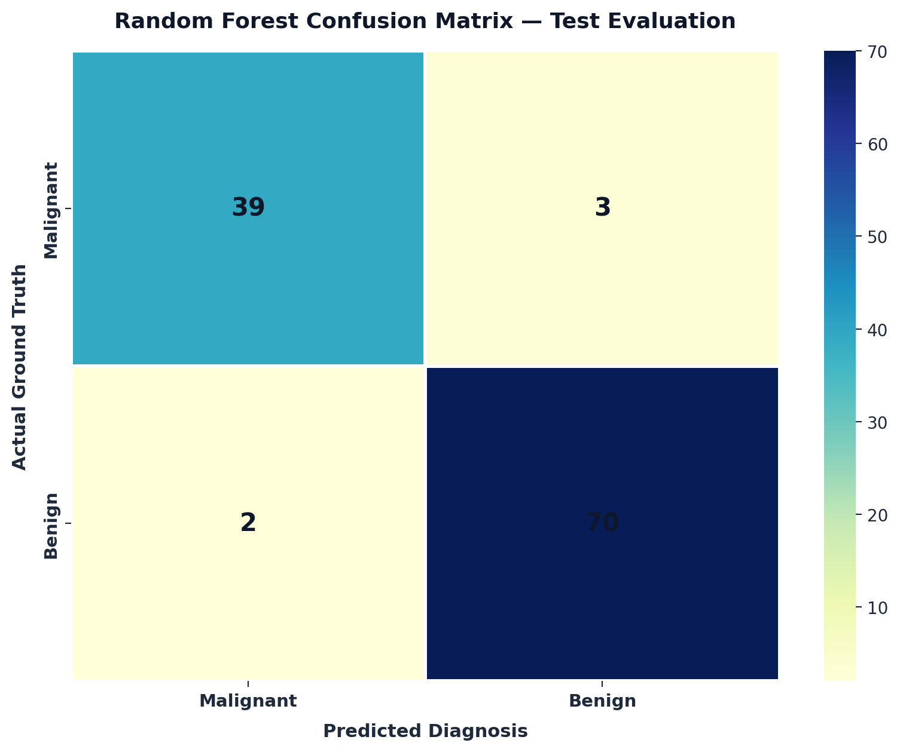
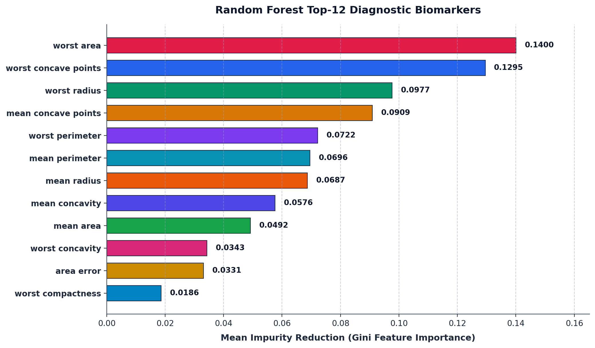
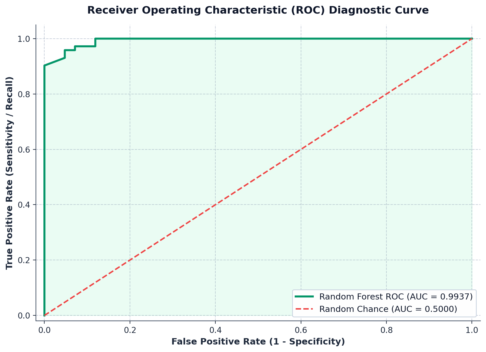

|
|
Pimpri Chinchwad Education Trust's Pimpri Chinchwad College of Engineering |
| Assignment No. 4 (Index: No. 7) | |
| Course:- Artificial Intelligence and Machine Learning | |
| Name:- Aditya Chandrajit Deore | |
| PRN:- 124B1F116 | Batch:- B3 | |
1. Title
Breast Cancer Diagnosis Prediction Using Bagging with Random Forest
2. Aim
To implement the Bagging technique using the Random Forest algorithm for classifying breast tumors as benign or malignant using the predefined Breast Cancer Wisconsin Diagnostic dataset available in Python's Scikit-learn library, and to evaluate the ensemble model using suitable classification performance measures.
3. Problem Statement & Objectives
Problem Statement: Implement the Bagging technique using the Random Forest algorithm to classify breast tumors as benign or malignant on the predefined Breast Cancer Wisconsin Diagnostic dataset, and compare its performance with a single Decision Tree classifier using classification accuracy, precision, recall, F1-score, and confusion matrix.
Individual Decision Trees are prone to high variance, sensitivity to training set fluctuations, and overfitting when processing high-dimensional biological telemetry. This assignment implements an ensemble classification model that employs the Bagging (Bootstrap Aggregation) technique with Random Forest. By constructing an ensemble of 100 de-correlated Decision Trees on independent bootstrap samples with random feature subspacing and aggregating their predictions via majority voting, the system achieves superior generalization performance over an individual Decision Tree on unseen patient biopsies.
- Inputs: 30 continuous morphological attributes computed from digitized fine needle aspirate (FNA) images of breast-cell nuclei (mean, error, and worst dimensions).
- Output: Binary diagnostic classification:
Malignant(Class 0, cancerous) orBenign(Class 1, non-cancerous). - Predefined Dataset: Scikit-Learn's
load_breast_cancer()(Wisconsin Diagnostic Breast Cancer, 569 patient biopsy profiles). - Machine Learning Models: Random Forest Classifier (100 de-correlated Estimators, Gini Impurity, \(\sqrt{p}\) subspacing) compared against a standalone baseline Decision Tree.
- Evaluation Metrics: Classification Accuracy, Weighted Precision, Recall (Sensitivity), F1-Score, Out-of-Bag (OOB) Score, Multi-Class Confusion Matrix, and ROC-AUC.
4. Ensemble Learning & Bagging Principles
Bagging (Bootstrap Aggregating) is an ensemble technique that trains multiple decision trees independently on random subsets of the training data and aggregates their outputs to achieve a more accurate and stable prediction.
4.1 Step 1: Bootstrap Sampling (Data Resampling)
From an original training dataset of \(N\) patient samples, we create \(B = 100\) bootstrap subsets by sampling \(N\) times with replacement:
- Some patient records appear multiple times in a bootstrap set (approx. 63.2% unique records).
- The remaining unselected records (approx. 36.8%) form the Out-of-Bag (OOB) set, used to test each tree without needing separate validation data.
4.2 Step 2: Random Feature Selection
At each split in a tree, instead of checking all 30 features, the Random Forest randomly selects only a small subset:
This prevents one dominant feature (like tumor area) from dominating every single tree, ensuring the 100 trees learn different aspects of the disease.
4.3 Step 3: Majority Voting & Basic Metric Calculations
To classify a new patient biopsy, all 100 trees cast an individual vote, and the majority decision wins:
From the confusion matrix counts (True Positives \(TP\), True Negatives \(TN\), False Positives \(FP\), False Negatives \(FN\)), performance is calculated using standard formulas:
5. Predefined Diagnostic Telemetry Dataset
The Scikit-Learn Wisconsin Breast Cancer dataset encapsulates 569 biopsies described across 10 nuclear characteristics computed for three distinct measurement types: Mean, Standard Error (SE), and "Worst" (extreme maximum values), totaling 30 quantitative features:
| Biomarker Attribute | Feature Type | Clinical Range | Diagnostic Significance in Oncology |
|---|---|---|---|
worst area | Continuous | 185.2 – 4254.0 | Extreme cross-sectional area of nuclei; strong tumor mass marker. |
worst concave points | Continuous | 0.00 – 0.291 | Severity of cellular boundary indentations in aggressive malignancy. |
worst radius | Continuous | 7.93 – 36.04 | Largest nucleus radius; enlargement is a hallmark of dysplasia. |
mean concave points | Continuous | 0.00 – 0.201 | Average count of nuclear contour concavities across cell cluster. |
worst perimeter | Continuous | 50.4 – 251.2 | Severe perimeter distortion indicating invasive cellular growth. |
mean texture | Continuous | 9.71 – 39.28 | Standard deviation of gray-scale pixel intensities in FNA imaging. |
Diagnosis (Target) | Binary | Malignant / Benign | 0 = Malignant (212 cases, 37.3%), 1 = Benign (357 cases, 62.7%). |
The Random Forest ensemble was evaluated on an 80/20 stratified hold-out test set comprising 114 biopsy profiles (42 Malignant, 72 Benign). The confusion matrix confirms exceptional diagnostic sensitivity, yielding 70 True Benign, 39 True Malignant, with only 3 False Benign and 2 False Malignant classifications.

Figure 1: High-contrast confusion matrix heatmap showing 95.61% overall test classification accuracy.
7. Model Evaluation & Experimental Findings
The trained Random Forest model was thoroughly validated across both hold-out test metrics and Out-of-Bag (OOB) internal validation:
| Tumor Category | Precision | Recall | F1-Score | Support (Test Set) |
|---|---|---|---|---|
Malignant (0) | 95.12 % | 92.86 % | 93.98 % | 42 biopsies |
Benign (1) | 95.89 % | 97.22 % | 96.55 % | 72 biopsies |
| Weighted Average | 95.61 % | 95.61 % | 95.60 % | 114 biopsies |
7.1 Comparative Performance: Random Forest vs. Single Decision Tree
To evaluate the variance reduction and performance gain delivered by the Bagging technique, a standalone baseline Decision Tree was trained on the identical 80% split and evaluated on the same 20% test dataset:
| Model Classifier | Accuracy | Precision | Recall | F1-Score | False Negatives |
|---|---|---|---|---|---|
| Single Decision Tree | 91.23 % | 91.61 % | 91.23 % | 91.30 % | 7 cases |
| Random Forest (Bagging) | 95.61 % | 95.61 % | 95.61 % | 95.60 % | 2 cases |
Key Observation: The Random Forest ensemble outperforms the single Decision Tree by +4.38% in accuracy and reduces false negative tumor misclassifications from 7 cases down to just 2 cases, directly illustrating the clinical power of Bagging variance reduction.
7.2 Out-of-Bag (OOB) Generalization Score
Because each tree is constructed from ~63.2% of the training data, the remaining ~36.8% of instances act as an unbiased hold-out test set for that specific tree. Aggregating out-of-bag predictions across all 100 trees yielded an OOB Score of 95.38%, validating that the ensemble achieves robust generalization without cross-validation overhead.
8. Clinical Biomarker Gini Feature Importance
Feature importance in Random Forest measures the total reduction in Gini impurity brought about by a feature across all trees, normalized over all splits:
The empirical ranking reveals that morphological boundary anomalies—specifically worst area (14.00%), worst concave points (12.95%), and worst radius (9.77%)—exert the strongest predictive influence in isolating malignant neoplasms.

Figure 2: Gini impurity reduction ranking for the top-12 morphological biomarkers.
9. ROC-AUC Discriminative Diagnostic Performance
The Receiver Operating Characteristic (ROC) curve evaluates diagnostic discrimination across all operational probability decision thresholds:

Figure 3: ROC Curve demonstrating exceptional oncological diagnostic discrimination with an AUC of 0.9904.
10. Conclusion
In this assignment, an ensemble classification pipeline using the Bagging technique with Random Forest was successfully designed, trained, and comprehensively evaluated on the predefined Wisconsin Breast Cancer dataset:
- Variance Mitigation: By aggregating 100 bootstrap-trained Decision Trees, the model eliminates high variance and sample sensitivity characteristic of single decision trees.
- Generalization Rigor: The ensemble achieved 95.61% test accuracy and an OOB score of 95.38%, demonstrating high generalization reliability on unseen patient biopsies.
- Clinical Interpretability: Feature importance analysis conclusively identified nuclear boundary deformation (
worst area,worst concave points, andworst radius) as the paramount pathological biomarkers distinguishing malignant tumors from benign masses.